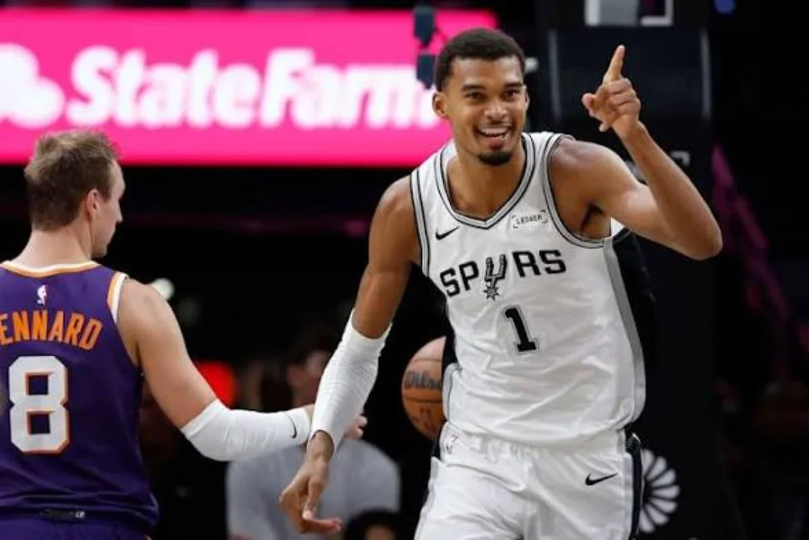
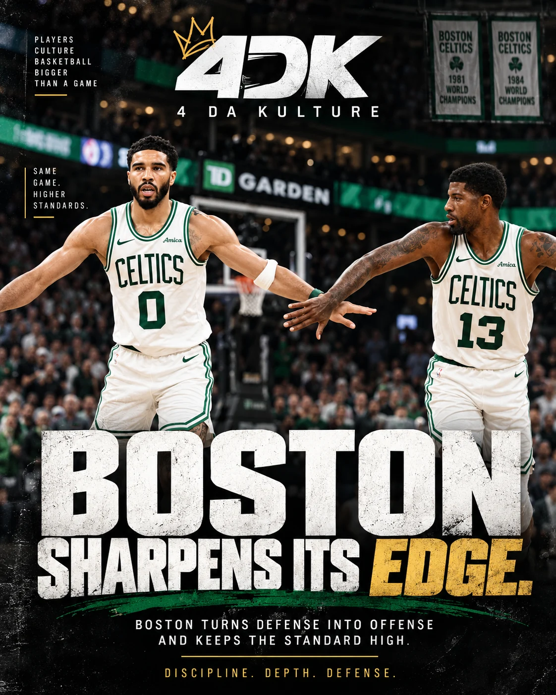
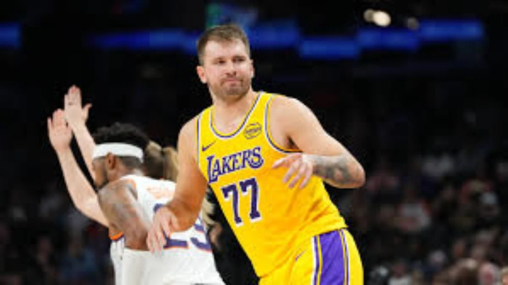

Full scoreboard
Houston 114, San Antonio 110
Boston 107, New York 103
Lakers 125, Clippers 117
Detroit 128, Miami 111
Chicago 132, Milwaukee 125
Minnesota 115, Orlando 93
Atlanta 128, Charlotte 81
Memphis 111, Golden State 108
Dallas 121, Indiana 105
Toronto 112, Washington 102
Utah 120, New Orleans 119
Portland 128, Sacramento 120
The night in depth
Game 01 · Houston 114, San Antonio 110
Şengün and Amen give Houston multiple ways to win

29 PTSAlperen Şengün20 PTS / 10 REBAmen Thompson114–110Rockets win
Alperen Şengün finished with 29 points, seven rebounds and seven assists, while Amen Thompson supplied 20 points and 10 rebounds. Kevin Durant contributed 20, but the Rockets did not need to rely on a single scorer. Şengün controlled crucial late possessions and Thompson’s defense changed the finish. Wembanyama delivered 25 and 13, while rookie Dylan Harper scored 20. Houston’s balance makes it a serious contender; San Antonio’s guard hierarchy and late-game execution remain stories to watch.
↑ Back to scoreboardGame 02 · Boston 107, New York 103
Tatum responds; the defending champions have questions

36 PTSJayson Tatum7 of last 8Boston points by Tatum107–103Celtics win
Jayson Tatum answered his opening-game criticism with 36 points, nine rebounds and seven assists, including seven of Boston’s last eight points. Paul George, Derrick White and Neemias Queta gave the Celtics enough support despite Payton Pritchard’s quiet night. New York is 0–2: Brunson struggled, Bridges went scoreless, and Karl-Anthony Towns scored an efficient 22 on just 13 attempts. OG Anunoby and Miles McBride contributed, but the Knicks need sharper execution. Boston deserves its flowers without excusing New York’s problems.
↑ Back to scoreboardGame 03 · Lakers 125, Clippers 117
All hands on deck: the Lakers win without Luka carrying them

28 PTS / 9 ASTAustin Reaves6 BLK / 3 STLWalker Kessler125–117Lakers win
Austin Reaves delivered 28 points and nine assists. Walker Kessler added 22 points, eight rebounds, six blocks and three steals. Luka Dončić recorded 23 points, six rebounds and seven assists but also 11 turnovers. The Lakers won anyway. Kessler, Quentin Grimes and Matisse Thybulle raise the defensive floor, though communication and ball security still matter. Los Angeles needs a full supporting cast to relieve Luka’s burden and become a credible postseason threat.
↑ Back to scoreboardGame 04 · Detroit 128, Miami 111
Detroit is already a contender, not a surprise
The Pistons followed their comeback victory over Boston by taking control against Miami. Giannis Antetokounmpo produced 36 points and 12 rebounds for the Heat, but Detroit’s collective performance mattered more. Cade Cunningham, Jalen Duren and the supporting rotation have expectations built on last season, not merely two October wins. Health and playoff execution will determine the ceiling.
↑ Back to scoreboardGame 05 · Chicago 132, Milwaukee 125
Caleb Wilson gets the green light
The Bulls are young and developing, and rookie Caleb Wilson has room to grow through real offensive responsibility. Chicago’s scoring was impressive, but conceding 125 points shows the defense remains unfinished. Wilson does not have to become the first option immediately; the long-term goal is to develop the skills and judgment to become that player.
↑ Back to scoreboardGame 06 · Minnesota 115, Orlando 93
Depth, balance and a new floor general
Anthony Edwards and LaMelo Ball did not need monster scoring nights for Minnesota to win comfortably. The Timberwolves can lean on Ayo Dosunmu, Jonathan Kuminga, Jaden McDaniels, Terrence Shannon Jr. and Rudy Gobert. Our preferred arrangement is LaMelo organizing the offense while Ant remains the primary scorer. The challenge is turning impressive depth into cohesive playoff basketball.
↑ Back to scoreboardGame 07 · Atlanta 128, Charlotte 81
Atlanta overwhelms a Hornets team searching for creation
A 47-point blowout highlighted Atlanta’s defensive pressure and Charlotte’s offensive limitations without LaMelo Ball. Jalen Johnson led the Hawks’ all-around attack and Dyson Daniels disrupted possessions defensively. Brandon Miller now carries more creation responsibility, but one player cannot instantly replace an elite playmaker. Atlanta deserves credit; Charlotte needs a clearer offensive identity.
↑ Back to scoreboardGame 08 · Memphis 111, Golden State 108
Cam Boozer delivers a clutch rookie moment
Golden State held a 12-point lead late before Memphis finished on a 17–0 run. Cameron Boozer scored 25 points, grabbed 13 rebounds and delivered the go-ahead basket. Ty Jerome added 28. Boozer’s confidence is a promising early sign for Memphis; the Warriors must answer for a damaging closing stretch.
↑ Back to scoreboardGame 09 · Dallas 121, Indiana 105
Kyrie leads the response; Flagg’s shoulder is the concern
Kyrie Irving scored 24 and P.J. Washington posted 20 points and 13 rebounds. Cooper Flagg contributed 14 points and six assists before leaving with a shoulder issue. Dallas has veteran production, but Flagg’s health and development are central to its long-term ceiling.
↑ Back to scoreboardGame 10 · Toronto 112, Washington 102
Scottie Barnes establishes the defensive tone
Scottie Barnes finished with 28 points and 14 rebounds, RJ Barrett scored 23, and Toronto continued to generate defensive pressure. Trae Young had 22 points and 12 assists for Washington. The Raptors’ energy is promising, but turnovers and half-court execution remain areas for improvement.
↑ Back to scoreboardGame 11 · Utah 120, New Orleans 119
Peterson and Keyonte offer a glimpse of Utah’s future
Jaren Jackson Jr. scored 24, Keyonte George recorded 19 points and 10 assists, and rookie Darryn Peterson added 15. Utah’s close win offers a glimpse of how George and Peterson might share creation duties. Zion Williamson scored 23 for New Orleans, but the Pelicans could not protect their late advantage.
↑ Back to scoreboardGame 12 · Portland 128, Sacramento 120
Portland’s third quarter flips the game
Portland exploded for 44 points in the third quarter. Deni Avdija contributed 26 points, six rebounds and six assists; Damian Lillard and Toumani Camara added 19 each. Sacramento got 33 from rookie Darius Acuff Jr. and a triple-double from Domantas Sabonis, but could not contain Portland’s surge.
↑ Back to scoreboard4DK Nightcap Awards
Player of the NightAlperen Şengün
Defensive PlayAmen Thompson
Statement PerformanceJayson Tatum
Rookie SpotlightCameron Boozer
Defensive StandoutWalker Kessler
Team StatementDetroit Pistons
Biggest ConcernNew York Knicks
Late-Game CollapseGolden State Warriors
Opening week does not decide championships. It reveals the questions that will shape them. At 4 Da Kulture, we watch more than the scoreboard — we watch the stories behind it.